Speculation: Atoms
Atoms exist throughout by same aether like their environment, so there exist no ´solid (elementary- or subelementary-) particles´ at all. Atoms are local vortex-systems of generally sphere-shaped form. Within their ´aura´ the aether is swinging from outside inward at increasing tracks. Only at level of one shell most wide motions occur, which are decreasing to smaller radius towards centre.
Motions are swinging at more or less circle-like tracks, which here are called ´eyes´ (instead of ´electrons´ of common atom-models). There are atoms with only one eye or up to hundred eyes. Swinging of all eyes can not be totally uniform at sphere-shaped shell. So there must exist transition-areas with relative unsteady movements. Number of these ´edges´ between eyes correspond with mass-number of atoms. So ´mass´ of an atom is based on ´bulkiness´ of its motion pattern.
There are no ´weak and strong nuclear forces´. Cohesion or bonds of atoms exclusively are based on general aether-pressure - and because inside of atoms all motions can meet only according to their special shapes. At the following this hypothesis will be well-founded step by step.
Inner-Life of Hollow-Spheres
At previous chapter mainly were observed the motions at or outside of a sphere-surface. At the following now research for ´perfect´ motion pattern inside of sphere is discussed. These motions are easier to imagine, e.g. by a (classy) hollow sphere and a stick within. At picture 08.13.01 at A this sphere (yellow) is sketched and diagonal within a moveable stick (red) is arranged. This stick represents connecting line of neighbouring aetherpoints and at both ends two aetherpoints are marked black. This stick can take various positions within hollow sphere and could turn any way we like it, e.g. like shown by both arrows.
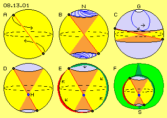
However, each aetherpoint must come back to its original place (without doing rotations), e.g. must keep near north pole N all times. There for example, aetherpoint may swing at rosette-tracks (see previous chapter), like schematic drawn at this picture at B. When this aetherpoint stays within that north-pole-region, its antipode will move at analogue tracks within corresponding space for motions near south-pole. Neighbouring aetherpoints at connecting line will move within space of a double-cone (light red).
At C is sketched an extreme wide rosette, where loop-track reaches nearby to equator (and in addition these loops are wandering forward like marked by arrows). The aetherpoint comes back all times to its focus G (white), each time some shifted in turning sense. Also here, its antipode (and all other neighbours) are moving analogue and synchronous.
Monopole-Sphere
As mentioned at previous chapter, sphere-shaped objects well may come up ´spontaneously´ if fitting motion-remainders meet. However it´s improbable, completely symmetric motions are resulting immediately. Much more probable will come up some un-even or more tumbling swinging motions, e.g. like sketched at this picture at D. Upper aetherpoint is moving at relative wide loop- respective rosette-track, while aetherpoint below is ´rolling-around´ at shorter radius (within areas marked light blue). Connecting line (red) again is moving within two cones (light red), however of different size, so tops of both cones (blue, near H) meet some below the equator (dotted ellipse).
Inevitable consequences are shown at E: upper aetherpoint did move relative far off its north pole, while downside aetherpoint did not move off south pole thus far. At left side thus ´too many´ aetherpoints did move down than could take place at geometric exact sphere-surface. Opposite, at right side too less aetherpoints did move up. So this sphere is deformed: left side becomes swelling (marked red, see arrows) and right side (and also at top) this sphere becomes dented (marked green, see arrows). So both observed aetherpoints (inclusive their neighbours at connecting line) are swinging at rosette-tracks (of differing size) and same time, total sphere-surface between both aetherpoints is pulsating (where swellings and dents wander forward in turning sense around the sphere).
At F this sphere with its different inner-cones is drawn once more by some smaller scale. Around this sphere now also is drawn its aura (green), representing area of necessary balancing motions towards Free Aether. At top, swinging exists within wide space of motion, thus at relative far tracks, so balancing motions are reaching out corresponding far (marked by high dark-green cone). At south pole S, swinging occurs at tracks more narrow, so there is demanded only thin balancing area (marked by short dark-green cone).
This object well is comparable with that ´jellyfish´ resp. ´Monopole-Shell´ of previous chapter (there at picture 08.12.03). Like these, here this sphere has an un-even aura and thus shows ´negative charge´, thus is affected by differing pressure of ambient Free Aether. This structure ´staggers´ through space, steady driven by aether, all times south pole ahead. Situation more calm only comes up, if that mono-pole docks at suitable place of an other object. This will occur all times at ´calm´ side (thus here at south pole), where e.g. also two of these mono-pole-spheres could bond. Opposite to previous ´hollow´ jellyfish resp. hull, this motion pattern here however represents a ´solid´ sphere. All aether within sphere-surface is also swinging synchronous (thus not only both cones between observed aetherpoints but all neighbours in all directions are swinging analogue).
Speculation: H
This swaying-swinging and pulsating-around object (of previous picture at D and E, inclusive its aura at F) is most frequent material appearance within total universe: hydrogen. This chemical element makes 99 % of all masses of sun-system, because sun and gas-planets by majority exist of hydrogen. Hydrogen is the lightest atom and is moving most fast of all gases by nearby 1800 m/s.
Hydrogen exists only short time in shape of single atoms, but exothermal is building two-atomic molecules called deuterium (seldom also 3-atomical tritium). At ´sun-hell´ hydrogen is ´burning´ and resulting helium, where 0.73 % of ´masse is transferred into energy´ (see further down and later chapter concerning sun). Hydrogen builds most bonds with other chemical elements, so e.g. at earth mostly exists as molecule of water and of many organic substances. So this small ´dancing´ aether-vortex is basis of all life.
Dipole-Sphere
Surface more uniform in principle comes up by symmetric swinging of observed aetherpoints, like e.g. sketched as dipole-sphere at previous picture 08.13.01 at B. There, whole inner area is swinging analogue and likely, as connecting line (red) shows. Now exist two symmetric inner-cones (light red) and their tips meet at centre.
This dipole-sphere corresponds to dipole-shell discussed at previous chapter (see picture 08.12.08). Problem of linear sections of motions was reduced by tracks-with-stroke. Finally there were deduced these rosette-tracks, which allow multiple motion pattern at sphere-surfaces. Rather interesting is the extreme version like sketched at previous picture 08.13.01 at C, where swinging motions of rosette reach nearby to equator. This motion pattern is drawn once more here at picture 08.13.02 at A with some more details.
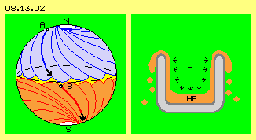
Focus-areas at poles N and S are marked white, and observed aetherpoints must come back to these spots all times. Track of upper aetherpoint is drawn as blue curve and area of overlapping rosette-loops are marked light-blue (and analogue bottom area is marked red).
Movement process can be ´imagined´ like this: at a small glass-ball are marked north- and south-pole and equator between. Within that hollow sphere is a stick, as long as diameter. One end of stick is positioned near north pole and now is guided at a curve downward nearby to the equator (like here shown by arrow at A). Afterward this aetherpoint is guided back upward. Next downward-loop is running likely, however shifted little bit (at left-turning curves to left side). The other end of stick (within south-semi-sphere) is forced to move at analogue tracks.
At this stick could be fix mounted a second stick, which naturally must perform analogue motions within that hollow sphere. The aetherpoint B (here about 90 degree shifted from A) at end of second stick is drawn here and its tracks are also marked. When A is swinging from north towards equator, same time B must move from equator down south. At (not visible) backside of sphere same time the antipodes move from south towards equator respective from equator up to the north.
Instead of these two sticks, quite a lot could be arranged within that hollow sphere, so building a radial-shaped star - and all tips of all sticks will move simultaneous at similar tracks, inclusive all their neighbours. This likely, uniform moving aether thus indeed builds perfect swinging pattern within a sphere and at its surface because all aetherpoint no longer are moving at exact circle tracks but at long stretched rosette-loops. The aura (not shown) outside of surface drawn here, is also uniform, because towards all directions analogue motions are reduced to small radius of Free Aether. However that swinging here is rather far-running (nearby 90 degree), so outside balancing cones will reach out relative wide. Looking from outside at this object one would have difficulties to analyse real motion processes, nevertheless one would experience that tumbling, swinging and seemingly turning movements really pretty and somehow perfect.
Speculation: HE
Motion pattern of that object is second-most material appearance of universe: helium. This element is found prevailingly at gas-planets and stars, there as result of hydrogen-nuclear-fusion. Helium is most light noble-gas and does not bond with other elements - just because it has perfect shape of sphere with closed aether motions of rosette-loops.
Suprafluidity
Helium comes next to idea of Ideal Gas. Only at deep temperature it becomes liquid and at very strong coldness it becomes just ´super-liquid´ resp. shows rare characteristic of ´suprafluidity´. The result of spectacular experiments is rough sketched at picture 08.13.02 right side at C. The helium HE (light red) crawls up walls of cup (grey) - thus contrary to gravity-direction - and flows resp. drops down again outside of cup.
The term of ´temperature´ is expression for speed of material particles when moving relative to each other. This motion is strongly reduced at deep degrees of temperature resp. finally standstill is achieved. Untouched however are all motions of aether, no matter whether Free Aether or Bounded Aether of atoms. Also surfaces of atoms go on swinging, inclusive its bumps and dents, thus also these turning-pulsating surfaces. Naturally also aura with its balancing motions is going on and on, i.e. atoms still are ´trembling´ at deepest temperatures.
The helium-atom is so perfect round to keep independent all times. Its aura is symmetric however strong swinging, helium-atoms not even can ´hook together´ mutually. Onto each single atom within that cup still rests aether-pressure (see small arrows at previous picture), while could and calm wall of cup practically affects no counter-pressure. General aether-pressure will ´push flat´ and equalize all hills - and thus here these most mobile helium atoms are shifted up the wall (as gravity by itself never could achieve, nor any other mysterious force).
Atomic-Number, Mass-Number and Radius of Atoms
At Periodic Table of elements all atoms are listed with their atomic-number (number of protons, normally same number of electrons) and their mass-number (number of protons plus neutrons). Atoms are arranged according to structure of their electrons. However Bohr´s planet-model no longer is matching with modern knowledge as achieved by quantum-theories. However I prefer quite an other presentation, exclusively based on necessities of aether motions.
At following pictures some atoms are schematic shown and their atomic-number (black figures) and mass-number (blue figures) are mentioned. A property most interesting is the radius of different atoms, which are at scales of about 10^-10 m. These tiny lengths are merely measurable, especially because atoms show no dedicated border. Often only the ´covalent radius´ of an atom can indirectly be calculated based on bonds within molecules. Ratio of scale of atoms here are marked by spheres (resp. circles) of different size. At the following pictures are also drawn characteristics of motion pattern of different atoms (however without their aura).
One, two and three Eyes
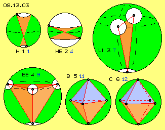
At picture 08.13.03 left upside, previous discussed hydrogen-atom H with its atomic-number 1 is sketched. Aetherpoints within that sphere are swinging asymmetric at rosette-loops, upside within wide and downside within smaller space of movement (marked white). At bottom exist relative narrow motions and only at such calm areas atoms can bond to molecules. Only the upper area shows wide-range motions, thus H has only one ´eye´ (as I call these areas, so these eyes are not mixed up with different term and vortex-system of free ´electrons´).
Two electrons (respective protons) are criterion of helium He and indeed, both poles show symmetric swinging motions. However rosette-loops reach so far down to equator, no docking at this noble-gas is possible. At the other hand this wide stretched swinging demands wide aura. Even the He-atom is some smaller than the H-atom, the He shows four times heavier mass-number.
Within a sphere also three of previous discussed sticks can build a triangle and its three corner-points can swing within each space for motion. This triangle (red) and its three eyes (white) are drawn upside right at this picture. This atom is trivalent lithium Li, a real ´awkwardly´ construction, demanding wide volume and thus showing mass-number 7. Indeed, this structure is no real sphere but demands a flat aura. This element is the most ´in-noble´ of all elements, so just for ´filling gaps´ by bonds and compounds with other atoms, e.g. serving as storage / source of free electrons within batteries. ´Round stuff´ would only result, if two of these plates are combined to hexagonal carbon. That structure ´shrinks´ to 6-valent C, a compact sphere, only half as wide and with adequate mass-number 12 (see below right).
Speculation: Coal
By common understanding, coal is based on organic material. However there are coal-deposits totally embedded within primary rocks, where never could be biologic substances. So today one tends to opinion, coal comes up by pure an-organic processes. At such geologic formations free lithium appears often, at the other hand these stones release gases, e.g. methane. At certain temperatures and pressures different hydrocarbons come up and if water eliminates, pure coal remains (see especially H.J. Zillmer, Energy-Mistake).
Four, fife and six Eyes
At lower part of picture 08.13.03 constellations are drawn, building ´nice´ spheres, crystals and compounds. Left side shows four-valent beryllium Be with its mass-number 9: a perfect tetraeder, build by four equilateral triangles. Four observed aetherpoints at corners are drawn and their rooms for movements are marked by white faces.
Strong stability of that motion pattern is based on fact, one aetherpoint may move slow or may even standstill for short moment or opposite, may move relative fast - and the other corner-points can balance that unsteady motion within sphere without problems. Nevertheless, also bumps and dents will come up at surface for short time, resulting previous discussed trembling of atoms. This tetraeder-motion-pattern naturally can build nice crystals and thus beryllium is often part of precious stones.
When this three-sided pyramid is completed to a double-cone, fife-valent boron B results. Its higher mass-number 11 is ´packed´ within even smaller volume. Again less volume needs mass 12 of C-atom, where six eyes build perfect hexaeder. This pattern is suitable for building diverse bonds, especially of hydrocarbon-strings, and thus is basis of all living.
Already now is easy to detect, ´mass´ won´t correlate to volumes of atoms. However in general is valid, the more eyes exist and the more uniform they are arranged, the more compact these spheres are (at periodic table from left to right the increasing atomic-numbers resp. number of electrons / protons). At the other hand it´s obvious, additional neutrons are necessary for increasing number of electrons and / or their un-even arrangements.
Eight, ten and twelve Eyes
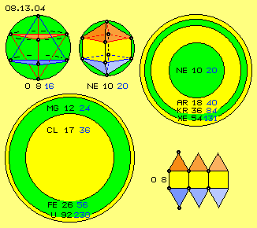
That rule goes on, like shown at picture 08.13.04 by some examples of atoms with higher atomic-number. Upside left the oxygen O with its atomic-number 8 and corresponding mass-number 16 is sketched. Eight eyes result when two tetraeder fit into a sphere, mirrored at centre (here drawn red and blue and each one triangle-surface highlighted). That ´magic symbol´ has great importance in spiritual concern. At this picture below right side, a pattern is drawn how to build that shape by equilateral triangles and squares.
Upside at middle of picture, two four-sided ´pyramids´ are arranged within sphere, again mirrored. At this atom with its ten eyes, the inner three ´electron-shells´ are completely filled up - by common understanding. These ten eyes are arranged so uniform at sphere-surface, adequate mass-number 20 results. Above this, that motion pattern is so same all around, only relative thin aura is necessary. That´s why the atom of noble-gas neon Ne needs a radius once more shorter.
If now however ´fourth electron-shell´ is started, at first comes up great asymmetry. Left side below at picture, that green ring marks essentially wider radius of magnesium Mg (atomic-number 12, mass-number 24) - even this atom has only two eyes more than previous neon. Additional fife eyes has the atom of chlorine Cl (atomic-number 17, mass-number about 36), however is packed within less volume (yellow circle). Previous wide volume of magnesium (with its 12 eyes and mass 24) is wide enough also for 26 eyes of iron Fe inclusive its mass-number of 56. Thus same space takes more than double masses.
Much Masses at same Volume
At iron, ´electrons´ already are positioned at fourth shell, obviously however these shells have no certain thickness. It seems more likely, the uniform spreading and likely distances between eyes are relevant. Naturally volume of sphere expands by cube of radius, however heavy atoms obviously need not corresponding more space. Here for example, around magnesium or iron (green) is drawn a yellow ring, showing size of uranium-atom U with its atomic-number 96 and mass-number 238.
Right upside at this picture, volumes of noble gases are sketched and also these ´perfect´ spherical objects show same rule. At centre (green) is marked neon-atom Ne once more. When its 10 eyes grow to 18, results at first astonishing wide volume of argon Ar (yellow) with its mass-number of 40 units. Double number of ´electrons / protons´ of krypton Kr (atomic-number 36, mass-number 84, green) demands atom-radius just little bit larger, and also the additional 18 eyes of xenon Xe (atomic-number 54, mass-number 131, yellow) needs only few additional space.
Punch-Sensitiveness
The atoms are aether-vortices of different complexity. Motions are more or less ordered and here these areas of relative steady motion-shape are called ´eyes´. Small atom H has only one eye, heavier atoms can show more than hundred of these striking places. At atoms, aether is swinging within itself, building more or less perfect sphere-shaped surfaces. At (or some inward of) mentioned atom radius, that swinging occurs at most wide tracks. From there, previous motion-cones reach inward and corresponding to smaller rooms, the radius of all motions become reduced. Opposite towards outward, increasing space is available for aura of balancing motions, until motions become reduced to size of ambient Free Aether.
This aura protects the object against environment, nevertheless atoms continuously are attacked by radiations of all kind and / or by mutual collisions. These impacts occur not only frontal (resulting deformations for short moments, see below) but also by flat angles (resulting distortions at surfaces). Structure of surfaces are most stabile when external disturbances are ´suspended´ at its best - and these are equilateral triangle-constructions.
Picture 08.13.04 down right shows pattern for an ´ideal´ body, build only by equilateral triangles and / or squares. An external stoke at one corner is abducted along edges at its best. That´s why such bodies build atoms most stabile. At the other hand, outer electron-shells become finally stabile when completed to six resp. eight or multiple of. As long as surface of an atom has not achieved this structure, objects ´protect´ each other by building bonds with other atoms. Molecular compound still is ´internally trembling´, however represents structure more stabile against external punches.
Long-Term Stability
Many points can be spread (more or less) equal at a sphere-surface (or also within a sphere) and that´s why atoms with different atomic-number exist. Internal swinging is so flexible that many places can show relative steady motions. Obviously however, above hundred eyes the structure is no longer completely stable, occasionally accumulate ´internal tensions´ or ´external stress´ might produce damages respective partial or total decomposition.
So indeed it´s astonishing, atoms can stay long term. As deduced upside, motions won´t occur at pure circle tracks. Throughout all ´chaotic´ however, distances between aetherpoints must be constant all times. This means, within that seaming chaos all times must exist areas with relative constant motions - previous eyes - and these guarantee internal stability of whole vortex-system. From outside that vortex-structure is stabilized by general aether-pressure which affects all around. And as aether is gapless, thus all processes occur within same medium, these motion pattern are running for millions of years unchanged (however not totally constant but intermediately and locally with diverse deformations, see below).
Alternative Atom-Models
Naturally these ideas are diametrically opposed to common understand and theories. However famous Bohr-planet-model of atoms has had its days. There was assumed, electrons would rotate around centre by razing speeds. As electrons are assumed to be negative, one hat to assume a correspondent number of positive particles (including questionable assumption unlike poles would mutually attract). Resulting was dilemma of ´strong nuclear forces´ for keeping protons nearby each other despite of their likely charges. One still is searching for Higg-particles (in vain) - and even one would detect that stuff still is unexplained how that ´glue-kit´ could function. As electrons are mass-arm, atoms however show mass, protons must be weighty. Because calculation does not match, only the ´invention´ of additional neutrons could help, by same amount like protons - or sometimes also some more - or less? This statement might sound bad and you won´t find it at lesson-books - nevertheless that´s the truth.
At quantum-theories one stated, location and speed of electrons are not measurable same time, thus one now is calculating only with wave-functions and probabilities - with results or interpretations beyond common logic (e.g. ´reality´ appears only by act of observation). Appreciative Pauli-principle found acceptance because it´s reasonable e.g. two particles can not exist at same spot same time. Whether these four ´quantum-numbers´ however are suitable criteria might be doubted, based on multiple divergences. Quantum-theories in principle did take over old idea of shell-shaped construction, only replacing electrons by terms like ´electron-foam or -cloud´ - and above this replacing all elementary particles by quarks - without explaining why these are steady changing or could generate long-term material appearances when existing only for most short intervals.
So even one still is searching for ´particles´, now conviction rises, finally nothing else than motion exists (however not putting this in concrete terms but only discussing via abstract ´forces, energies, fields, interactions´ etc.). Still totally neglected is logic compelling ´something´ which could move or function or result all these unexplained phenomena. At all common models, still something undefined is moving within an empty space, which at its best is curved or put on a level with energy or information.
In my opinion, real observed appearances, inclusive available data of chemical elements, must result from motion-necessities of a totally uniform and thus gapless basic substance. With following ´speculations´ I want to point out differences of these ideas - and just following I´ll substantiate these hypotheses.
Speculation: Electron, Proton, Neutron, Quarks
Free electrons exist and they can dock at atoms, however there are no electrons at shells of atoms (but instead of, these ´eyes´ are locations of relative steady swinging motions).
No protons exit, neither at atoms nor else where. The atomic nucleus seams to be ´solid and heavy´ only because rejecting observation-rays (which can not simply run through centre of atoms, because there meet all motion-cones and thus aether there is ´tensioned´ nearby maximum, see below).
No neutrons really exist, it´s only a mathematical abstract unit for outstanding rate of ´mass´ (where mass by itself represents ´bulkiness´ of atom-motion-structure, so term of ´neutron´ might expresses that part of motions which are ´not very harmonic´, see below).
There are no quarks at all and certainly no sub-elementary ´particles´ exist. First six quarks (called ´up, down, strange, charmed, bottom, top´) and now nearby thousand quarks are no independent units, but these observations concern sections of tracks of aether-motions (and aether is really changing its motion directions all times). Above this, no ´living´ atomic cores are observed but only the ´garbage´ of destroyed motions of previous well ordered aether-vortex-systems.
Spreading-Pattern
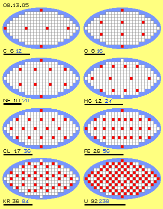
Instead of diverse ´electron-shells´ of common theories, atoms have only one shell with a sphere-shaped surface (corresponding to atom-radius or some smaller), at which all eyes are arranged. At picture 08.13.05 sphere-surfaces are sketched simplistic by ellipses (axis-lengths 1:2, height equals distance between poles, width equals length of equator), where squares roughly represent available places. At that surface are all eyes arranged, by most equal spreading. Depending on number of eyes come up different pattern.
Some of previous discussed chemical elements are shown, e.g. carbon C, oxygen O and neon Ne. These atoms build regular pattern, where more eyes (6, 8 and 10) need smaller shell-surfaces (length of radius are marked by thick black lines). Spread-pattern of magnesium Mg (with its 12 eyes) is sketched with an additional level and this element indeed needs essentially wider surface.
Again at much smaller surface, chloride Cl (17 eyes) builds narrow pattern, for example also the iron Fe (with 26 eyes) or the noble gas krypton Kr (where 36 eyes even could build honeycomb-pattern).
Uranium U with its huge number of 92 eyes demands merely enlarged surface.
By common atom-model, additional electrons are positioned at steady more shells, thus resulting wider volumes. By increasing number of electrons, the atom-radius actually could not become shorter again. Here however eyes are arranged at only one shell and intermittent the spreading-pattern only uses an additional ´latitude´. Further eyes can be positioned at that circle respective they result spreading more even, at practically same or even smaller atom-volume.
Well known, nevertheless remarkable is relation of eyes (electrons) to mass-number (protons plus neutrons): ´nice´ pattern show relation of exact 1:2 (here the first four examples), whereas higher numbers of eyes can not be spread totally equal anywhere at surface respective inevitably come up some irregularities (demanding additional neutrons).
Edges of Triangle- and Square-Pattern
All geometric structures in principle can be build by triangles and thus also the arrangements of eyes at sphere-surfaces. Like mentioned upside, triangle-structures show best stability, equilateral at its best. Instead of relative un-regular triangles, ´nice´ pattern can also be build by squares. These can also be stabile, not only by rectangles but also by trapezium or rhombus. The stability thus results not from corner-points but from edges between - which thus now become special importance.
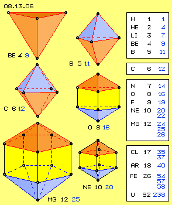
At picture 08.13.06 once more are drawn six atoms with arrangement of their eyes within space. Extension of these ´bodies´ is represented by different sizes. Right side of picture are listed diverse atoms with their atomic-numbers (black) and mass-numbers (blue).
The hydrogen H is no ´real´ atom but a sphere with one pole swinging extensive and one pole relative calm. The helium He is also a special case, because around its 2 poles wide-range swinging exists. Its mass-number probably could point out, the tracks build a four-leafed rosette. Just ´exotic´ is that lithium-plate Li with its 3 corners and 3 edges, where any disturbance results strong bends and buckles - corresponding to relative high mass-number of 7 units.
Even beryllium Be with its 4 eyes builds a nice tetraeder with 4 edges, its mass-number of 9 units is somehow too high. These edges build acute angles, so any external push results deformation of total structure. The boron B has one eye more and its ´mirrored tetraeder´ fits well into a sphere-surface. However also here the edges show acute angles, thus its mass-number is 11.
Real ´ideal´ shape finally is achieved by carbon C with its 6 eyes and 6 edges and mass-number 12 (commonly 6 protons plus 6 neutrons). That´s why this atom builds basis for mass-units of atoms. Same time, its eight equilateral triangle-faces build basis for extensions by each eight eyes (resp. commonly of electrons of each higher shell, see below).
Also atoms of next atomic-numbers show two edges for each eye, e.g. nitrogen (N 7-14) and oxygen (O 8-16), whereas un-even numbers of eyes show masses some higher, e.g. fluorine (F 9-19). At even number of eyes, double-rule goes on, e.g. with neon (Ne 10-20) and magnesium (Mg 12-24).
Isotopes
Shape of neon here is drawn by two four-sided pyramids with four squares between. Resulting are 20 edges, just corresponding to mass-number 20. Instead building squares, these 10 eyes could alternative also be build exclusively by triangles. However there would result more edges - and indeed, every tenth neon-atom is a neon-isotope with mass-number 22. Differing mass-number of isotopes commonly is explained by additional neutrons (at unchanged number of electrons resp. protons). In reality however, at isotopes the eyes are arranged little bit other kind. For example, rectangle faces can be replaces by triangles and vice versa. Compared with original grid-structure results an other number of edges - and these correlate with the mass of atoms.
At this picture for example the 12 eyes of magnesium Mg are arranged that kind, at each pole is positioned one eye and each fife eyes are positioned at two rings between. Connecting lines between all corners build 25 edges - and every tenth magnesium-atom is the isotope-25. At three levels could also be arranged each four eyes, building 24 edges (when middle level is shifted by 45 degree). An other alternative respective the normal magnesium Mg-24 build a nice ´Ufo-shape´: three eyes are arranged around each pole (which by itself has no eye) and at level between are positioned six eyes at wide equator.
More Eyes - more Edges - more Mass
Beyond atomic-number 12 the mass-numbers are increasing in general, because now each additional eye results more than two additional edges. Already and even the noble-gas argon Ar with its 18 eyes shows mass-number 40. With increasing number of eyes, surfaces of bodies become ´more round´, even they still are build by triangle- or square-edges. Possibilities for varying arrangements (by same number of eyes) are also increasing, so more and more isotopes come up. As examples are listed chlorine C-35 and C-37 or iron Fe-54, Fe-57 and Fe-58 at table of previous picture.
If at a surface of (more or less) round sphere, a grid-structure of squares exist, from any corner start four edges. Each new point (added to this grid) results four new edges. At small bodies resp. few eyes ´circle is closing´ soon, so e.g. each additional eye results only two new edges. At a grid of triangles, each corner is connected by edges to three neighbours. A new point thus produces three additional edges, unless already existing edges are used. Resulting for example is the uranium U with its atomic-number 92 and its mass-number 238 (average about 2.6 edges each eye).
So if one assumes, ´vortex-centres´ are spread equal at a sphere-surface, a regular correlation between number of eyes and number of connecting lines between comes up. Strange enough now the number of these edges corresponds exact with mass-number of atoms (except at very small atomic-numbers, however also by common understanding these light atoms show uneven numbers of protons /neutrons). Decisive question now is, why these edges should cause appearance of ´mass´.
Nervous Edges
At picture 08.13.07 at A are drawn fife clocks and eight connecting lines (blue) between these eyes. All clocks are left-turning and turn likely, as e.g. would be possible at a pole cap (see previous chapter). At B theses clocks did turn by some degree. All aetherpoints at end of each clock-hand and also all aetherpoints of all connecting lines did swing parallel, each around its own fulcrum.
At previous chapter was detected, this total synchronous swinging is not possible at whole sphere-surface. Differences can be compensated by tracks-with-stroke respective by rosette-motions. At these small objects however, the differences obviously are not balanced by totally likely transitions. At the one hand there are eyes and areas with relative steady swinging (around their ´focus´) and at the other hand there must be transition-areas with motions more tense (e.g. also caused by continuous external disturbances). These areas between eyes correspond with previous ´edges´ between corners.
At this picture upside right is sketched a situation, where all clocks did go on turning synchronously, however one eye (at C) did stay behind little bit and an other eye (at D) did run ahead little bit. So distances between observed aetherpoints no longer are constant resp. original connecting lines become curved edges (see blue lines).
These lines practically are like ´connecting-rods´ between turning wheels. When wheels turn same speed, these connecting-rods are moving within dedicated space, at this picture at E marked light-blue. When wheels do not turn likely speed, connecting-rod should be elastic resp. these elastic edges will be curved. Thus much wider room for motion is demanded, like at F schematic marked light-blue.
This sketch shows view onto fife clocks, so looking from outside at sphere-surface. At G is drawn a cross-sectional view through three of these neighbouring clocks (white). When all clock-hands (red) show upward, connecting lines are comparable with rigid ´connecting-rods´ (blue) resp. straight edges. If clocks do not turn synchronous, connecting lines become curved resp. these edges ´whip´ within enlarged space, like sketched at G right side (light-blue).
At each curvature of a connecting line is too much ´material´ at concave side and too less material at convex side. There must come up balancing motions, where aetherpoints move into third direction, i.e. each curvature inevitably must occur into all three dimensions same time (described in details at earlier chapters). Here thus these edges are curved not only at level of sphere-surface (like at F), but same time are bend some inward or outward (like marked at G).
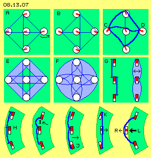
Speculation: Energy-Level
By common understanding ´electrons spontaneously jump to lower energy-level and back again´. Here is assumed, all eyes are positioned at only one shell. However occasionally they get drawn some inside and afterward come back to original position.
Speculation: Radioactive Decay
Eyes can be pushed off their compound at sphere-surface by occasional ´tensions´.
Bumps and Dents
At lower row of picture 08.13.07 are drawn some sections of atom-sphere. Areas marked light-green thus show segments of sphere-surfaces. There are drawn each three clocks (white) with momentary position of their hands (red). At H all hands of all clocks show upward, the connecting lines are marked blue. The edges (blue) between eyes thus are positioned along level of sphere-surface.
At I the upper clock shows downward, so distance between upper and middle clock becomes shorter. Connecting line is curved outward (see arrow) and the sphere now there shows a swelling (green area is pushed some outward resp. extended to left side). At J is shown opposite situation, were downside clock shows down. Connecting line thus become stretched resp. is somehow pulled inward (see arrow), so sphere there is dented (green area is more flat resp. sphere somehow drawn in to right side).
These clocks in principle can not turn totally conform, such small dents and bumps thus are quite normal resp. resulting that steady trembling of atoms. All eyes and edges however are still relative stationary (within that frame of motions). These irregular motions however can become grave by external disturbances, e.g. like sketched at this picture at K.
There, the upper clock shows upward and the below clock shows downward. Connecting line thus is extremely ´stretched´, naturally however the distances between aetherpoints can never be extended. Balance can only be achieved when edges are shifted some towards centre of atom. The middle eye thus is pulled to shorter radius (see arrow).
That extreme tension only comes up by external disturbance (affect of an ´electric-charge-unit´). Short time later however clocks will synchronously turn in usual range. That middle eye thus soon will come back to its original radius, where aether is swinging some outward (´radiation´ is transmitted, the ´electron´ is back at original energy-level).
Monster-Waves
So whole atom is trembling based on not totally conform swinging of its eyes, where some ´tension´ comes up along edges. As aether is neither elastic nor compressible, according to uneven swinging of eyes these edges will same time show corresponding differing motions e.g. as these edges become curved. All motions along sphere-surface inclusive their bumps and dents as a whole are balanced. Aether spills some to and fro and back again, where all ´waves´ mutually add or fade, without producing special ´tension´.
The more eyes and the more edges are arranged at sphere-surface, the more of these balancing wave-motions are running all around. However also ´harmless´ small waves occasionally can overlay that kind, incredible ´monster-waves´ suddenly come up - just from ´nothing´. Within grid of these triangle-edges thus by occasion might occur ´stretching´ like sketched at K, so all clock-hands showing radial off a central clock. After a half turn, all hands are showing into direction of that central clock (at L). This eye is pushed to a longer radius (off centre of sphere) - so sudden and so hard, this motion-pattern is shoot off sphere-surface (see arrow R).
This motion process results by pure chance from quite normal motions of all eyes and edges of an atom. However that extreme building-up is favoured by high number of eyes and edges. Heavy atoms respective such with ´unfortunate´ structure loss an eye resp. ´electron´ by ´radioactivity´. In extreme case, that occasional internal shock-vibration might result disintegration of total atom. The radioactivity of certain elements is well known - however up to now the real cause was not known.
Simple and complex Aura
The ´mass´ of atoms is not based at any ´hard particles´, but is expression for ´bulkiness´ of motion pattern. Upside were discussed the arrangements of eyes at sphere-surfaces and there all motions are running at most wide tracks. Towards centre of atom, space becomes narrow and all motions thus are reduced to smaller tracks. Towards outside, wide space is available, nevertheless also there must be balancing motions to ´resting´ Free Aether´ of environment. The complexity of total motion pattern is represented by mass of an atom. Light atoms have a ´simple-knitted´ aura, heavy atoms have a complex aura. However at each atom are areas of relative simple steady swinging motions (of eyes) and between are transition-areas with motions more complex (of edges).
Picture 08.13.08 at A shows view at a part of sphere-surface (green). There are drawn two eyes resp. clocks (white) and connecting line (blue) between. When both clocks turn synchronous, observed aetherpoints (at ends of both red clock-hands and all neighbours of connecting line) move parallel to each other (like a rigid connecting-rod). This picture at B shows cross-sectional view through these eyes. Now there are drawn connecting lines (black) towards Free Aether (here left). Radius of all parallel swinging motions are reduced to smaller radius, here again represented by green cones.
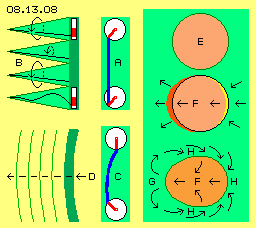
All connecting lines of cones are swinging parallel to each other (see arrows). If swinging motions within eyes are changing (e.g. at more narrow or wider tracks or running at rosette-tracks), swinging within aura changes accordingly. All motions within eyes thus are ´suspended´ towards outward without problems (and in addition also these connecting lines towards Free Aether are no rigid straight lines, but neighbours of spiral curves move likely and if necessary also use third dimension for balancing distances, thus function like springs, details see earlier chapters).
At this picture at C are drawn two clocks which do not turn totally synchronous. The edge (blue) thus must behave like an elastic connecting-rod (however here the ratio is extremely overdrawn). This curvature can take place at level of sphere-surface, inevitably however will affect also cross to. At D schematic is shown the sphere is swelling outwards. The aether of that area is pushed some outward (see arrow).
Wide-range Balance
That radial movement of edge however is not so simplistic balanced as previous swinging movement of eyes. Opposite, that swelling results very complex and wide-space balancing motions, like sketched at this picture right side.
At E at first this sphere-surface is drawn as round sphere (light red). At F the surface is extended towards left (marked dark red), i.e. aetherpoints of an edge there did wander little bit outward (see arrows). Within aether can not exist gaps and even no different densities. This motion thus demands inevitably, neighbouring aetherpoints must also wander towards left (see arrows at centre of atom). At opposite side thus comes up a dent (marked yellow, see arrows). The nervous motions of edges thus are not simply suspended at sphere-surface (like swinging of eyes) but affect back throughout atom.
Aetherpoints however can not move towards left as we like it, because everywhere already same aether with same density exists. Only at backside of atom now came up corresponding ´empty area´. Left-movement of bump at G (previous dark-red area) thus must run back towards right (see arrows H) in order to ´fill-up´ that dent (previous yellow area) of backside. This ´back-flow´ thus is running all around atom. So much more aether is forced to move than the aether of original small bump (where again the curvatures are extremely overdrawn).
That bump and resulting movements can be compared with movement of a solid ball through an Ideal Gas. Frontside of solid body affects pressure onto gas-particles, that pressure spreads into all directions likely. Thus also at backside of solid body affects corresponding pressure, pushing the ball through medium without any resistance - however only theoretical within Ideal Gas. This comparison however does not strike, because common sciences assume existence of solid bodies at the one hand and at the other hand an empty environment, within which only some gas-particles are drifting.
Cause of Appearance of ´Mass´
Realiter however, atoms exist of same aether like their environment, everywhere of likely ´density´ (gapless and incompressible). Local areas differ only by the kind of motions, inside of atoms rough-swinging, outside Free Aether fine-swinging, at aura between with balancing motions. Here is no aether flowing around atom-ball (like gas-particles around solid body). There are no aether-flows with wide-rang wandering aether-particles. Within aether, here only all aetherpoints are shifting little bit into shown directions around centre of atom. As there are no fix borders, that motion-component e.g. is also ´walking into sphere´ from aside (see arrows H). All aetherpoints some later come back to their old places, i.e. that bump and dent got balanced (resp. become replaced by next trembling-motion of atom).
One more grave difference exists between common mechanics and motions of aether. Coming-up of bump is not (first in time) cause for (later in time) follow of motions - but all motions are mutually conditional, all can start only at same moment (and come to an end same time).
That´s reason why for mass of an atom only these ´nervous´ areas between eyes are relevant. Swinging at areas of eyes, even at tracks-with-stroke or at rosette-tracks, are simply balanced at level of sphere-surface and are suspended without problems by balancing cones towards Free Aether. Only these irregular curvatures, that ´rattling of connecting-rods´ and resulting radial motion-components of edges requires these extensive aether movements all around. That´s the only reason, why mass-number corresponds so astonishing exact with number of edges between eyes (and not the imaginary protons and neutrons, for sure).
Inertial Mass
All motions of aether are running by scale of light-speed, so with about 300 000 000 m/s. Up to now was assumed, motion-complex of an atoms as a whole is stationary. An other situation exists if e.g. we try to hammer a nail into the wall. At first, hammer must be accelerated by muscle power, i.e. we must overcome ´inertia of resting mass´. Afterward, the hammer flies further on with constant speed, i.e. that body shows ´kinetic energy´ in shape of ´inertia of moving mass´. When the hammer hits the nail, force is transferred, i.e. acceleration and deceleration are repeated. It does not make real difference moving the hammer by 3 m/s or 30 m/s - in comparison with light-fast aether-movements.
In reality, there is no solid body wandering through space, but only the motion-structures of hammer- and nail-atoms are little bit shifted within space. That process is well comparable with building bump and dent at previous picture (at F, G and H). If an atom, from resting position, is accelerated, backside of atom becomes impressed by a dent and the aether through atom-centre is pushed forward (arrows F). Same time at front side, that new bump comes up (arrows G) and aether ahead of must escape by ´floating´ aside and back (arrows H).
At previous example of a stationary atom, these bumps and dents are drawn flat again by normal swinging of eyes, so that deformation is only a short-run appearance of normal trembling of all atoms. Just different is situation e.g. at previous acceleration of hammer, which produces an ´artificial´ (respective external-affected) dent and bump (according to arrows F), which is not equalized immediately. At frontside, aether-movements become enlarges (to size of atom-vortex, according to arrows G), all around aura come up these ´back-stroke-movements´ (according to arrows H), which meet at backside of aura and thus total motion-structure of atom goes on being pushed ahead within space (arrows F) - indeed without resistance because aether is real ´ideal´ substance.
So it costs one first input of power for producing first deformation of atom, where same time complete ´circuit´ of aether-movements all around atom are initiated. These motions go on running and affect that thrust onto backside of atom-vortex-pattern. These motions go on running with no resistance, because within gapless aether real energy-constant exists (different to level of material particles, where friction-losses are inevitable). Only because aether can neither be compressed not extended, all motions must go on all times.
Only by that view, ´mass inherent inertia´ becomes reasonable, inertia of resting mass like inertia of moving mass, inclusive term of ´kinetic energy´ - and naturally basic term of ´mass´ by itself. At all collisions of all atoms within whole universe, these processes occur likely. ´Inertia of masses´ respective ´inertial mass´ of atoms thus are universal appearances.
Speculation: Gravity
Gravity is no constant force and is not working at any place of universe, but gravity is only an appearance within near environment of celestial bodies.
Heavy Masses
For many readers it´s probably still hard to imagine, no ´solid bodies´ are moving ahead within space. Even there are no ´portions of aether´ wandering wide-range ahead in space. Only motion-structures are ´forwarded´ within space. At frontside, aether takes motion-pattern of aura-front and at the following takes total motion-sphere and at backside the aether ´flows back´ to its original swinging. Building previous first ´dent, bump and side-back-stroke´ demands affects of different strength. Complex motion-pattern resist stronger that acceleration and initiation than pattern more simple (and analogue appear different forces for corresponding deceleration). That´s why I called ´mass´ an expression for ´bulkiness´ of an atom-vortex-complex, based on motion-pattern more or less bulky, clumsy, unwieldy.
Similar to that external ´disturbance´ (for acceleration of previous hammer) works a weak power called ´gravity´, which exists at Free Aether around celestial bodies. At environment of earth exists a general motion with stroke into direction of earth-centre, where aether is moving towards earth minimum faster and minimum slower is moving back outward again. With every stroke, motion-pattern of an atom is pushed little bit nearer to the earth. Total motion-pattern of atoms are shifted somehow, no matter how simple or complex (all bodies are affected by likely gravity-acceleration and thus are falling likely fast).
If however a solid body is hindered to fall, it´s comparable to previous nail: the ground resists that motion. Strokes of gravity go on forming dents at upper side of each atom and that deformation is forwarded down through atom - and finally the ´weight of heavy mass´ is measurable, the more complex the structure is and the more of these objects affect onto scale, the more ´weighty´ that body appears. As both processes (the external mechanic force for accelerating the hammer and the effect of gravity-strokes onto atoms of hammer), ´inertial mass´ and ´heavy mass´ show identical values.
The earth is an assembly of coarse swinging units. Free Aether some thousand kilometres upside of earth is fine swinging. Towards earth, aether becomes increasing more ´dirty´, because generally passing into motions more coarse. This transition is asymmetric, the nearer to earth the more coarse - and that´s resulting previous stroke resp. that continuous weak thrust into direction of earth. This gravity results appearance of ´heaviness´ of bodies. The earth as a whole however has no weight and also ´earth-mass´ appears only in shape of different ´bulky´ motion-pattern of atom-assembly.
No attracting forces exist between celestial bodies - what honestly nobody could believe anyway, even not Einstein. That transition from ´pure to dirty´ aether exists only near to celestial bodies, only within their aura that centripetal thrust exists. Gravity thus is no universal force and by sure no constant (and nowhere are measured identical values). It´s absolutely strange - or pure nonsense - to produce calculations by millions of light-years into space - based on earthly gravity. Well, this statement is crass contradicting common understanding. However detailed descriptions at a following chapter will approve this new idea of gravity without any doubts.
Few Eyes - much Volumes
The analyses of data of diverse atoms did show clear, mass-numbers are independent from volumes. As previous considerations did show importance of edges, now its also clear why atoms with few eyes demand relative wide volumes. At picture 08.13.09 at A for example are drawn three eyes (resp. clocks) at a circle-shaped surface. The hands of these three clocks can not steady show into likely directions. So distances between hands (resp. aetherpoints at their ends) differ all times. The connecting lines (resp. edges) thus continuously are curved by different size (see blue curves). These edges move rather irregular and need wide room for motion (marked light blue). Thus aura of these atoms will show relative wide volumes.
Resulting is also very clear now, motions of eyes can not be simple swinging at circled tracks. These aetherpoints can only swing around a general focus and, should the occasion arise, must also do wide-range movements for balancing differences of distances. That´s why prevailingly motions will run at rosette-tracks.
Spin in Pairs
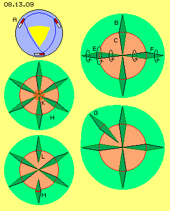
This picture upside right shows an atom inclusive its aura (light green). The eyes are positioned at a sphere-shaped surface (red circle). There exists swinging at wide tracks. Towards outside into direction of Free Aether, swinging is reduced to shorter radius, here for example represented by cone B (dark green). However also towards inside, that wide swinging must be reduced, here represented by inward showing cone C.
Different widths of swinging are marked by three arrows E. The inner cones meet at centre - and there the aether can not swing left- and right-turning same time. So if left eye E is left-turning, opposite eye F must be right-turning (each by view from outside). Also these contrary swinging motions at sphere-surface is possible by rosette-motions at its best.
At previous chapter at picture 08.12.08 (there E and F) was shown, two overlaying circle motions can result oval tracks. Depending on both radius, these ovals are forward- or backward-turning. Above this, these ovals can build forward- or backward-turning rosettes, only depending on relation of speeds of both circle-motions. So at a sphere-surface smooth transition (between left- and right-swinging motions) is absolutely possible. At quantum-numbers the spin (of electrons) is defined by -1/2, 0 und +1/2. However it´s open question whether that determination is suitable (e.g. because tracks well can be right-turning within a left-turning rosette). As a whole however, spin in pairs of opposite eyes will result most calm motions within centre of atoms.
Eyes in Pairs
These four eyes thus can build a continuous motion pattern also inside of atom. If now however one more eye is given, ´harmony´ at first is lost. At this picture bellow right side at G an additional fifth eye is drawn. If its inner cone has no motion fitting to the existing inner-cones, that new cone might not reach so far inward. This new eye thus could be positioned some more outside and accordingly, the aura would show a bump. This ´distended´ volume really comes up each time at an unpaired eye.
At this picture left side at H, previous constellation is added by one more eye, so now paired relation is achieved again. Higher number of eyes allows better coordination of movements, so these atoms show essentially less volumes.
At this picture, the centre K is marked dark-red, because there could come up real ´stress´. Like discussed upside, not all eyes all time can swing totally synchronous. Between the eyes exist edges with curvatures into all directions. This results bumps and dents at sphere-surface respective that trembling of whole atom. All these movements are balanced towards outside within the aura. However all these partly differing motions are also reaching inward to centre of atom. At much smaller rooms these motions must come together and must fit anyhow.
So possibly could be integrated eyes little bit ´weaker´, e.g. like shown at this picture at bottom left side at L. The cones of both additional eyes are shorter and do not reach quite inside centre. At the other hand, also ´normal´ eyes could be positioned some further outside of sphere-surface, like sketched at M. At any case it´s obvious, why parity of eyes (and their spins) cause advantageous motion pattern. Now one can also understand, even lot of eyes can perform conformuing movements within relative small volumes.
An advantage of high number of eyes for example also is, the edges between eyes become more ´calm´. If one edge is curved to a bump, it´s rather probable any neighbouring edge had produced a dent same time. The balancing ´flows´ (F, G and H at picture 08.13.08) thus must not run around whole ball, but compensation occurs within neighbouring areas - and as a side effect, this means less ´stress´ for narrow movements at centre.
Outer and inner Cohesion
It´s still astonishing why and how such complex structures can keep together and can exist long-term. By common view, cohesion of nucleus is based at a ´sticking glue´ totally inexplicable and at the other hand, electrons hold their shells via electromagnetism - definitely an absurd idea (like believing, planets would hold their tracks via gravity and thus could build a stable system, regardless all irregular affects of diverse kind). Based on gapless aether, no ´mysterious´ forces are necessary at all.
At picture 08.13.10 at A schematic is sketched an atom by cross-sectional view. It´s embedded within ambient Free Aether (light blue) and that fine swinging affects all-pressure (see earlier chapter 08.09.) onto areas of movements more coarse. Superior strength of environment however can not eliminate that coarse swinging. The more the connection-lines within aura (light green) of atom are compressed, the wider the amplitudes must swing (because within that aether no motion can ´got lost´). So there is an equilibrium with smooth transition from narrow to wide swinging at the outside ´border´ of aura.
Towards centre all motions meet and there results complicated ´tangle´ of motions at narrow room. Naturally also there all neighbouring aetherpoints must keep constant distances all times, must occur synchronous or adequate swinging into all three directions same time. The gapless aether is real ´hard´ medium and the connecting lines can be curved only by a certain degree (I estimate a relation of 1 : 10000). So from inside exists a ´limit of flexibility´. Simple motion pattern of eyes and edges can be closer whereas complex and nervous motions demand more space. All swinging from all directions however at centre is condensed as far as possible all times. That´s why centre of atoms appear ´hard core´ - even it exist by quite normal aether like anywhere else.
Just in the middle, all motions are interconnected so strong, no motion-part could be removed. So from the real centre, even the most complex atom gets its stiffness respective the structure of atom is fixated. At sphere-surface the motions can vary somehow and at the aura the external disturbances are ´suspended´. There is a smooth border towards Free Aether and its counter-pressure holds together that object from outside. At the inner however, all motions are coordinated so ´rigid´ that the atoms-vortex-structure is stabilized and can resist even strongest disturbances. So the atom has no alternative than going on by given pattern.
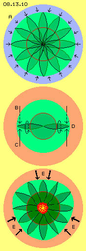
Heavy Elements
Like mentioned upside, motion pattern of hydrogen could come up by pure chance, build by ´motion-remainders´ meeting from contrary directions and ´whirling-up´ (analogue to whirlwinds). Two or even three hydrogen-atoms can gather to molecules and could build a mutual aura, e.g. finally building helium-atoms (more details at chapter next but one). It´s also known, certain elements can change into others (by certain conditions, especially e.g. Na, Mg, K, Ca, N). However it´s hard to understand, why and how heavy elements can come up.
At picture 08.13.10 at middle, again an atom is sketched, now embedded within ´witches kitchen´ of a star. The ´only´ necessity is, two disturbances (contrary direction and some shifted) by pure chance penetrate into aura (see arrows B and C), so a new eye is born. If occasionally at the opposite side (D) corresponding disturbances occur same time, even a new pair of eyes can come up.
Probability for these processes well exists, however just as much elements will be destroyed (and thus building previous motion-remainders). New born heavy elements have a chance to survive at the one hand, if they are pressed towards centre of star (and there building solid core). At the other hand these new elements could be pushed off star, like e.g. sun-storms sometimes spill iron-particles towards earth, disturbing radio communication etc. (details again see later chapters).
Nuclear Fission
Everyone knows disastrous effect of ´atomic bomb´ - however source of the giant forces still is unknown. Supposed is transformation of materia into energy by known formula E=mc^2 - however I suppose readers know about tautology of definitions of these terms. Real cause of that power-release is gapless-ness of aether. Decisive process schematic is sketched at picture 08.13.10 below.
The ´ignition´ is started when a (heavy) atom same time is affected by strong disturbances (see arrows E). The aura of atom becomes dented at several sides, i.e. all swinging motions are shifted towards centre, enforcing inevitably all amplitudes. At centre however, already by normal conditions most motions are ´tensioned´ by their maximum possibility for curvatures. Each additional disturbance - especially when occurring extreme fast - results ´stress´.
Like mentioned upside, the aether is hard medium and is not compressible. Relaxation of previous ´stress´ can only occur by real ´stroke for relief´, through a ´weak point´ (an area where aether momentary is not maximum tensioned) by shooting off one or several eyes (or even quite a part of atom-motions). This radiation occurs by light-speed (and merely slower fly off any disorderly motion-remainders). These hit onto neighbouring atoms and thus that avalanche-like increasing processes comes up.
So this process originally is started by motions below light-speed (e.g. collisions of material particles of high temperatures). Finally that bundle of disturbances results an extreme shortening of connecting lines inclusive their strong bending. This cumulates within centre of atom and if ´maximum load´ is achieved, massive aether-movements are resulting, flying off into all directions by light-speed.
It normally should be clear, even by minimum knowledge and conscience nobody can bear resonsibility for these hard radiations and leaving radioactive garbage at this planet for centuries.
Speculation: Bond-Power
All chemical bonds are based at only one ´force´: general aether-pressure (see chapter 08.09. All-Pressure) which shifts and keeps together all units of coarse swinging motions. Depending on matching surfaces-structures and their local motion-pattern this compound is more or less stabile.
Valence-Electrons and Compounds
By common understanding, atoms have one electron or even many electrons arranged at diverse shells. However, when atoms build any compound, only the outmost shell is important. That shell is ´saturated´ when all positions of ´valence-electrons´ are occupied. The inner shells thus are ´submerged´ anyhow, particularly as atoms of high atomic-numbers (and thus many shells) are merely wider than atoms of small atomic-numbers.
There are numberless chemical compounds (especially the molecules of organic chemistry) and diverse rules were detected, how these multiple shapes of atom-combinations are working. At the one hand atoms can exchange valence-electrons, at the other hand two atoms can ´use´ one electron mutually. There are double- and triple-bonds, attracting forces based on negative / positive charges, bonds based on more / less neutrons than protons, regarding spins etc. - or even not, i.e. no rule without exception. If now however atoms have neither protons nor neutrons and no electrons (arranged at multiple shells) at all - common rules of chemical bonds can not appropriately match reality.
Islands and calm Waters
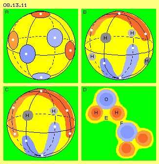
At picture 08.13.11 upside left at A is drawn a sphere-surface (yellow) and at this single ´shell´ are positioned six eyes (thus representing a carbon atom). The spin of eyes must be paired, so here three time left- and three time right-turning (marked blue respective red). Each arrangements of spins are resulting ´islands´ of neighbouring eyes with likely sense of spin. At these six eyes could exist two island of triangle-shape with left- resp. right-spin, or like shown here could exist two long-stretched islands.
Upside right at B a red band marks the area of an island (outer part of face dark-red, inner face light-red) at north-pole. Cross to that red island lies a blue, also U-shaped island at south-pole. Each island is about 120 degree long. Within area of an island, all clocks show into likely direction and thus the island shows relative steady and synchronous swinging. So this is a motion pattern very advantageous, even here the contrary spins are not exact at opposite eyes (what´s permissible exception, e.g. at carbon and also at following example of oxygen).
At areas between both islands must be transient-regions where left-turning swinging passes into right-turning (vice versa). As mentioned upside and described at previous chapter, smooth transition well is possible, even by overlay of only two contrary running circled movements. Standstill, linear motion, circled tracks-with-stroke, narrow or wide oval tracks, rosettes forward or backward turning, all shapes of motions are only depending on relation of radius and revolutions. At any case, at the middle of these transient-areas will exist motions relative slow and steady respective calm.
Docking-Hollows
Wide-range swinging demands high balancing cones, whereas slight swinging motions demand only short cones towards Free Aether. Thus the aura of that atom won´t be exact sphere-shaped, but has two ´ridges´ (the eyes and their edges), between which all around a deepening exists (areas of spin-transition). Most deep zones are positioned between the end of one mountain-ridge and the middle of the other u-shaped hill. These four positions are marked H (grey) at this picture upside right at B.
At these depressions of sphere-surface with its calm motions e.g. can dock hydrogen-atoms with their calm pole (which in extreme case is nearby resting, whereas opposite pole is wide swinging). This chemical compound is CH4, thus methane-gas, the basis of all organic chemistry.
At this picture below left side at C, eight eyes are drawn at a sphere-surface, so atom of oxygen. Here the red island is long stretched with fife eyes, whilst blue island is short with only three eyes. Also this exception of general rule for spin-parity is absolutely correct, because oxygen shows diverse equivalent structures. Here is room for only two ´valence-electrons´ respective are only two depressions with long distances between both mountain-ridges. Again, these spots are marked with H (grey) and this atom-combination is H2O - just normal water.
No attraction at all
Neither previous C nor that O do attract these Hs. There is no negative / positive charge which could affect any attraction (where ´negative charge´ realiter is only relative thick aura-layer and ´positive´ means relative thin or even very thin layer of swinging aether). No electrons are exchanged between atoms nor electrons are shared and also neutron-number does not matter. No kind of any mysterious forces are working here.
Only atoms are rolling, tumbling or flying through space and meet occasionally. If the one atom has a deepening at its aura, into which a part of aura of the other atom fits, by shape and kind of motions, and if that second atom by chance falls with its fitting part forward into usable deepening of the first atom - a bond did come up. How long that connection will hold resp. which kind of disturbance could break it off, is only depending on degree of mutual ´fitting structure´ (and naturally on intensity of disturbances).
It well could be, contours of involved atoms must be shifted somehow to put matters straight. So probably energy-input could be demanded. At the other hand that act of combination well could ´radiate energy´, if these mutual adjustments achieve better structure in total (where jerky motions are running through aether and accelerate or ´excite´ neighbouring atoms). As a rule this will happen, when eight faces (starting from hexaeder of carbon) are completed (where this again is not valid at any case of atoms with high atomic-numbers, depending of basic ´geometric Ideal Body´).
Only Pressing-on
All bonds, no matter how weak or strong, exclusively are caused by general Aether-pressure (again see 08.09. All-Pressure). Fine swinging of Free Aether of all environment is ´superior force´ for all local structures of coarse swinging motions. When atoms come close, they mutually protect against that pressure and are shifted into direction of joint pressure-shades. That´s the only affecting ´force´ for all chemical and physical cohesions.
As approve for existence of aether, today the ´Casimir-Effect´ is favoured: two plane plates, which are nearby each other, are further pushed together without usage of any known kind of force. It´s assumed, waves of only certain frequency could run into space between, whereas waves of all frequencies could affect pressure at outer faces of both plates. Resulting is a measurable force - of minimum size, so a rather ´weak prove´ for existence of aether (which in addition is not clear defined).
The aether of my exact determination is a gapless substance and thus there are motion-necessities, e.g. that limitation of a maximum degree of curvatures of connecting lines. If these limiting conditions threaten to become exceeded, real ´strength´ of aether-motions are disclosed - see previous nuclear fission. As inevitably there a motion-complex is blown to pieces, so vehement any atom glues together and so consequently the bonds of suitable aura-surfaces are achieved.
Mutual Aura
Most strong bonds are achieved when involved atoms build a common aura. As an example that picture below right side schematic shows two H2O-molecules. The oxygen-atom O is some wider, its sphere-surface is marked dark-blue and its aura is marked light-blue. Docking hydrogen-atoms H accordingly are drawn as dark-red sphere with light-red aura. Both complement one another respective are commonly embedded within an aura E (yellow).
The calm pole of H docks at depression of O, the other pole of H is relative wide swinging. Thus there the aura is relative wide-reaching - commonly called ´negative charge´. Opposite side of O builds that ridge with its rather synchronous swinging motions. There could possibly stick the O of an other molecule, however ridges would show contrary turning sense (nevertheless the ridge of one O-atom can dock into depression of a second O-atom, so ozone-molecule O2 results).
Temporary at mountain-ridge of O sticks the H of an other H2O-molecule, building a ´hydrogen-bridge´ F. However there won´t come up a mutual aura, because that H-pole is swinging too intensive. In addition that constellation is susceptible to external disturbances and thus the bridge breaks soon (for building new bridge some moments later). Finally when molecules fly some slower within space, also these connections can crystal - now building commonly aura of stabile ice.
Also particles of solid bodies keep together based on that general all-pressure respective also an additional aura comes up round the ´materia´. The cohesion however is not only determined by outside pressure, because also inside of body, between these ´separated´ particles come up areas of more or less synchronous swinging. These show certain structures with ordering function, so also from inside the atomic compound is stabilised and can resist against disturbances. This ´emergence´ e.g. is responsible for building crystals and far above this is resulting effects of ´self-organisation´ of previously individual units. A special kind of inner-aura for example builds the iron and that ´magnetism´ even reaches far out beyond poles (however these aspects can be detailed only by many separated chapters).
Continents and Dislocation
Atoms can show many eyes, in principle by pairs and by contrary spin. Inevitably two or more neighbours swing likely sense, so previous island appear. Also towards outward thus the aura will show only few faces of different spin. The old-fashioned model of atoms was oriented at sun-system with its core (the sun) and electrons (the planets). Now comparison with earth is more adequate: at surface of atoms exist only few ´continents´ (previous island, also with differing contours, especially these mountain-ridges) and between are few ´oceans´ (previous transition-areas where other atoms can dock by fitting circumstances).
Same number of eyes can be grouped by different islands, so again might build isotopes or different molecules and e.g. also different crystals. Upside the carbon (picture 08.13.11 at B) was assumed to exist by two islands with each three eyes. An alternative is shown at picture 08.13.12 left side.
Four eyes (marked 1, 2, 3 and 4, all e.g. with right-turning spin) build a wide island-face (blue). Both other eyes (marked 5 and 6, with left-turning spin) build a small island (red). At both sides of that ridge are transition-areas, where four hydrogen-atoms could dock (here are shown only two, marked H, dark grey). Within one of these double-depressions (DB, light grey) however could also dock the double-mountain-peak of a second C-atom (twisted 180 degree) - building a ´double-bond´.
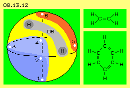
As an example at this picture upside right is shown the graph of ethylene C2H4, an ´unsaturated´ hydrocarbon with one double-bond. Both connecting ridges build a new island with likely spin, however these hills are curved opposite. That´s why e.g. unsaturated fats and oils are very reactive, at the other hand that molecule is important basis-chemical of petrochemistry e.g. for polyethylene, PVC and other products.
At this picture bottom right side is shown the graph of benzene C6H6 with its three double-bonds (a toxic substance, nevertheless basic material for many chemical products). The C-atoms build a closed ring and thus a rather stabile unit. At the other hand, remaining positions for docking H-atoms are somehow hindered. Today one assumes, the C-ring builds one level and upside and at bottom of are laying two ring-shaped ´electron-clouds´ (so H-atoms are ´dislocated´). Really, that appearance is clear evidence of an extended common aura for balancing that arrangement somehow ´tensed up´.
That formation now finally approves, no electrons rotate like planets around a core. However also that imagination of an electron- or charge-cloud is misleading, because these ´clouds´ merely can exist by separated ´particles´ (like water-drops). Just as impossible is idea, the atomic nucleus could exist by any ´hard stuff´. Thus also inapplicable is my comparison with continents and oceans, as all is only one unique plasma and locally only differed by different motion pattern. Nevertheless that ´geography´ of motion-areas of atoms is decisive for understanding chemistry.
New Model
Actually I was only searching for ´perfect´ motion pattern of aether at a sphere-surface. At first I ´naturally´ thought, it should be a perfect ball and naturally all motions should run totally synchronous, naturally at perfect circle tracks, all likely sense, naturally left-turning. Finally these previous considerations resulted necessity and possibilities of various motion pattern - leading to that new model of atom-structures (what actually was not my intention, at least not at the very moment, not in combination with subjects like milky-way, sun and planets).
Now this aether-model of atoms is deduced by some data of chemical elements, however it became totally contradicting to all common understanding of chemistry and quantum-theories. These sciences produced a lot of sophisticated complex formula and vast amount of seemingly precise calculations, listed hundreds of sub-elementary particles with most strange properties - so that new aether-model of atoms appears just primitive. Indeed, the only requirement is existence of real aether and its decisive property to be a gapless plasma. All other conclusions are ´really natural´ because simple - nevertheless compelling - logic deductions.
At this chapter I could demonstrate these ideas only by some few examples, however already there resulted obvious explanations for previously inexplicable ´phenomena´, up to basic terms of physics like e.g. ´mass´ or ´nuclear forces´. Desirable would be, chemists and physicists would make an inventory of all inconsistencies of common theories and especially would list the implicit, not mentioned and not explainable prerequisites of these models (because every new finding all times created new questions and interpretations - up to totally irrational conditions). I recommend to check that huge library for answers based on aether.
Since hundred years the aether is excluded (since Einstein, who however at mature years stated existence of aether indispensable). One could not and even can not imagine, how ´solid particles´ could fly through ´hard medium´. In the meantime however one knows, finally no ´firm materia´ exists, but only motions remain. Only a small step is necessary to understand, only the motion pattern wander through space - however this can not be a ´vacuum´ but must exist by something which is able to do these motions really. That something must nor can be any multiple stuff, but of only one kind - the really One and thus a gapless plasma. It makes no sense to go on smashing up atoms in order to achieve insights of ´dead scraps´. It would make sense to study motion-geometry of ´living atoms´, to gain valuable and useful findings.
If chemists and physicists take that attempt, soon they can develop previous examples of motion pattern to real new world-view, explaining variety of all appearances by intelligible aether-mechanics everyone can understand. Unfortunately sciences need no new model at the very moment, where e.g. pharmaceutical-industries produce inventions like birth- and pork-flu or atom-lobby detects CO2 as climate-killer. So probably aether-model of atom-aufbau needs a new generation of scientists - desirable however before one more century passes by.